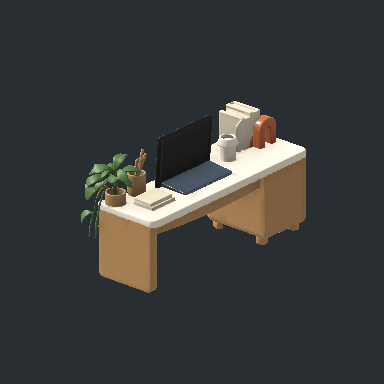
테이블 · 책상 · 화이트우드
홈오피스 책상
HomeOffice_Desk상판 소품이 본체와 연결되어 원형 유지
프리팹 파일Unity 경로 · 분류
Assets/Art/Items/Furniture/Library/Prefabs/Surface/HomeOffice_Desk.prefab
Surface / None / Floor
출처: C:/서현/3D 모델/가구/가구 모음_홈오피스템.fbx

HomeOffice_Desk상판 소품이 본체와 연결되어 원형 유지
프리팹 파일Assets/Art/Items/Furniture/Library/Prefabs/Surface/HomeOffice_Desk.prefab
Surface / None / Floor
출처: C:/서현/3D 모델/가구/가구 모음_홈오피스템.fbx
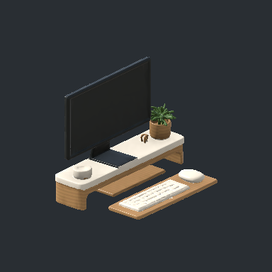
HomeOffice_ComputerSet모니터 받침대, 키보드, 마우스를 하나의 세트로 유지
프리팹 파일Assets/Art/Items/Furniture/Library/Prefabs/Display/HomeOffice_ComputerSet.prefab
Display / None / Surface
출처: C:/서현/3D 모델/가구/가구 모음_홈오피스템.fbx
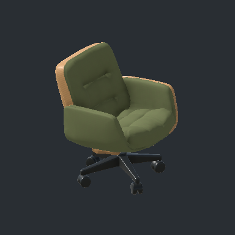
HomeOffice_OfficeChair개별 프리팹 · 바닥 중심 원점
프리팹 파일Assets/Art/Items/Furniture/Library/Prefabs/Seating/HomeOffice_OfficeChair.prefab
Seating / None / Floor
출처: C:/서현/3D 모델/가구/가구 모음_홈오피스템.fbx
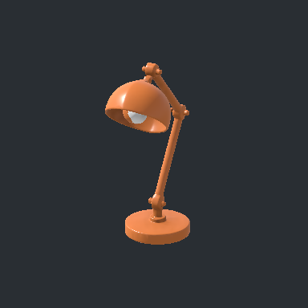
HomeOffice_DeskLamp개별 프리팹 · 바닥 중심 원점
프리팹 파일Assets/Art/Items/Furniture/Library/Prefabs/Lighting/HomeOffice_DeskLamp.prefab
Lighting / None / Surface
출처: C:/서현/3D 모델/가구/가구 모음_홈오피스템.fbx
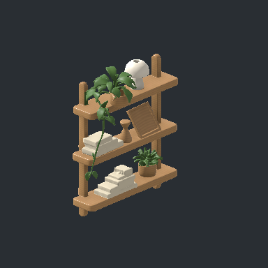
HomeOffice_Shelf개별 프리팹 · 바닥 중심 원점
프리팹 파일Assets/Art/Items/Furniture/Library/Prefabs/Storage/General/HomeOffice_Shelf.prefab
Storage / General / Floor
출처: C:/서현/3D 모델/가구/가구 모음_홈오피스템.fbx
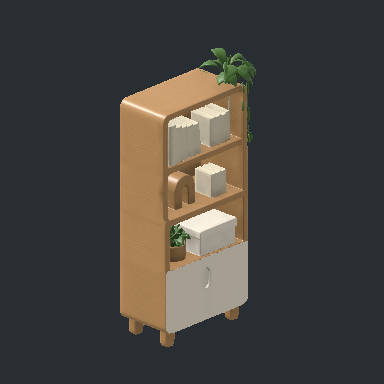
HomeOffice_Bookcase개별 프리팹 · 바닥 중심 원점
프리팹 파일Assets/Art/Items/Furniture/Library/Prefabs/Storage/Books/HomeOffice_Bookcase.prefab
Storage / Books / Floor
출처: C:/서현/3D 모델/가구/가구 모음_홈오피스템.fbx
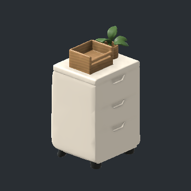
HomeOffice_DrawerUnit개별 프리팹 · 바닥 중심 원점
프리팹 파일Assets/Art/Items/Furniture/Library/Prefabs/Storage/General/HomeOffice_DrawerUnit.prefab
Storage / General / Floor
출처: C:/서현/3D 모델/가구/가구 모음_홈오피스템.fbx
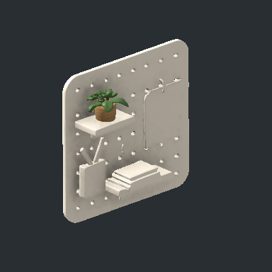
HomeOffice_WallOrganizer개별 프리팹 · 바닥 중심 원점
프리팹 파일Assets/Art/Items/Furniture/Library/Prefabs/Decoration/HomeOffice_WallOrganizer.prefab
Decoration / None / Wall
출처: C:/서현/3D 모델/가구/가구 모음_홈오피스템.fbx
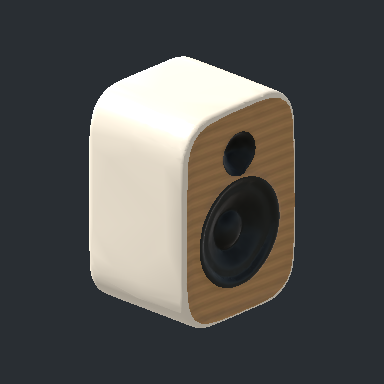
HomeOffice_SpeakerA개별 프리팹 · 바닥 중심 원점
프리팹 파일Assets/Art/Items/Furniture/Library/Prefabs/Music/HomeOffice_SpeakerA.prefab
Music / None / Surface
출처: C:/서현/3D 모델/가구/가구 모음_홈오피스템.fbx
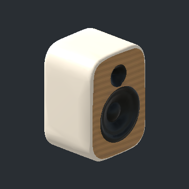
HomeOffice_SpeakerB개별 프리팹 · 바닥 중심 원점
프리팹 파일Assets/Art/Items/Furniture/Library/Prefabs/Music/HomeOffice_SpeakerB.prefab
Music / None / Surface
출처: C:/서현/3D 모델/가구/가구 모음_홈오피스템.fbx
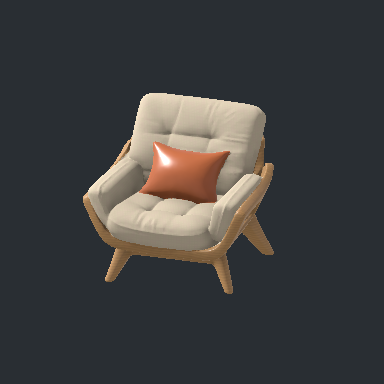
HomeOffice_LoungeChair개별 프리팹 · 바닥 중심 원점
프리팹 파일Assets/Art/Items/Furniture/Library/Prefabs/Seating/HomeOffice_LoungeChair.prefab
Seating / None / Floor
출처: C:/서현/3D 모델/가구/가구 모음_홈오피스템.fbx
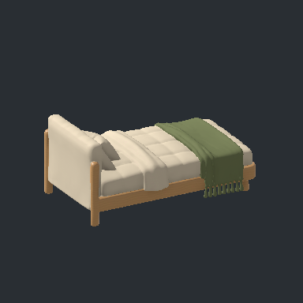
Bedroom_Bed개별 프리팹 · 바닥 중심 원점
프리팹 파일Assets/Art/Items/Furniture/Library/Prefabs/Sleep/Bedroom_Bed.prefab
Sleep / None / Floor
출처: C:/서현/3D 모델/가구/가구 모음_ 안방템.fbx
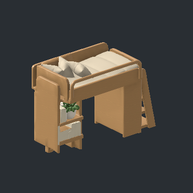
Bedroom_LoftBed개별 프리팹 · 바닥 중심 원점
프리팹 파일Assets/Art/Items/Furniture/Library/Prefabs/Sleep/Bedroom_LoftBed.prefab
Sleep, Storage / General / Floor
출처: C:/서현/3D 모델/가구/가구 모음_ 안방템.fbx
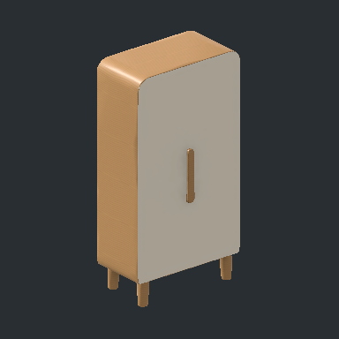
Bedroom_Wardrobe개별 프리팹 · 바닥 중심 원점
프리팹 파일Assets/Art/Items/Furniture/Library/Prefabs/Storage/Clothing/Bedroom_Wardrobe.prefab
Storage / Clothing / Floor
출처: C:/서현/3D 모델/가구/가구 모음_ 안방템.fbx
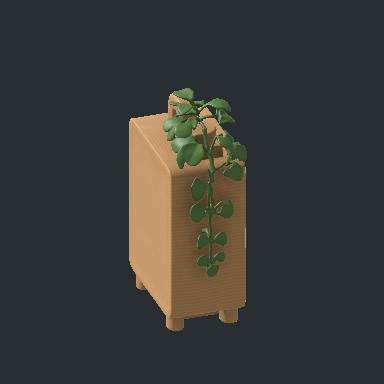
Bedroom_ChestOfDrawers개별 프리팹 · 바닥 중심 원점
프리팹 파일Assets/Art/Items/Furniture/Library/Prefabs/Storage/General/Bedroom_ChestOfDrawers.prefab
Storage / General / Floor
출처: C:/서현/3D 모델/가구/가구 모음_ 안방템.fbx
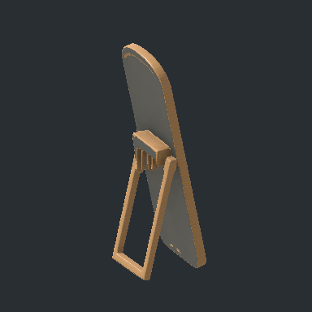
Bedroom_Mirror개별 프리팹 · 바닥 중심 원점
프리팹 파일Assets/Art/Items/Furniture/Library/Prefabs/Decoration/Bedroom_Mirror.prefab
Decoration / None / Floor
출처: C:/서현/3D 모델/가구/가구 모음_ 안방템.fbx
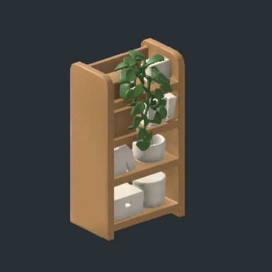
Bedroom_StorageShelf개별 프리팹 · 바닥 중심 원점
프리팹 파일Assets/Art/Items/Furniture/Library/Prefabs/Storage/General/Bedroom_StorageShelf.prefab
Storage / General / Floor
출처: C:/서현/3D 모델/가구/가구 모음_ 안방템.fbx
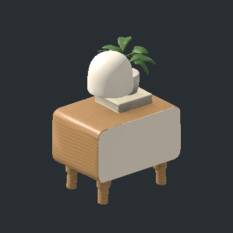
Bedroom_BedsideCabinet원본에 포함된 작은 협탁도 일반 수납으로 보존
프리팹 파일Assets/Art/Items/Furniture/Library/Prefabs/Storage/General/Bedroom_BedsideCabinet.prefab
Storage / General / Floor
출처: C:/서현/3D 모델/가구/가구 모음_ 안방템.fbx
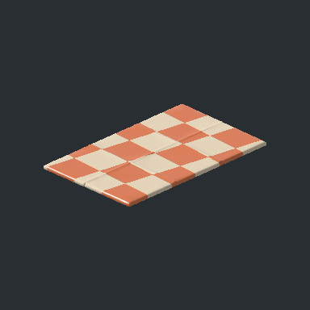
Bedroom_Rug개별 프리팹 · 바닥 중심 원점
프리팹 파일Assets/Art/Items/Furniture/Library/Prefabs/Decoration/Bedroom_Rug.prefab
Decoration / None / Floor
출처: C:/서현/3D 모델/가구/가구 모음_ 안방템.fbx
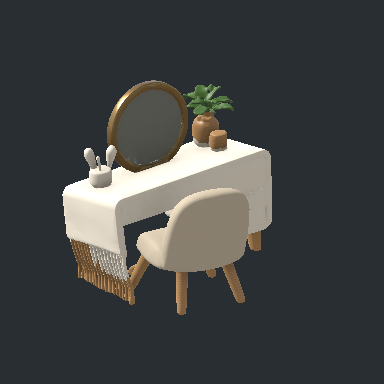
Bedroom_Vanity의자를 포함한 장식 세트; Seating 없음
프리팹 파일Assets/Art/Items/Furniture/Library/Prefabs/Decoration/Bedroom_Vanity.prefab
Decoration / None / Floor
출처: C:/서현/3D 모델/가구/가구 모음_ 안방템.fbx
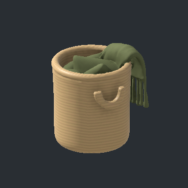
Bedroom_LaundryBasket개별 프리팹 · 바닥 중심 원점
프리팹 파일Assets/Art/Items/Furniture/Library/Prefabs/Decoration/Bedroom_LaundryBasket.prefab
Decoration / None / Floor
출처: C:/서현/3D 모델/가구/가구 모음_ 안방템.fbx
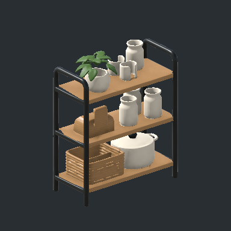
Kitchen_Shelf개별 프리팹 · 바닥 중심 원점
프리팹 파일Assets/Art/Items/Furniture/Library/Prefabs/Decoration/Kitchen_Shelf.prefab
Decoration / None / Floor
출처: C:/서현/3D 모델/가구/가구 모음_주방템.fbx
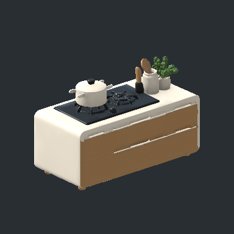
Kitchen_CookingIsland가스레인지, 화분, 하부장이 연결되어 Cooking 세트 유지
프리팹 파일Assets/Art/Items/Furniture/Library/Prefabs/Cooking/Kitchen_CookingIsland.prefab
Cooking / None / Floor
출처: C:/서현/3D 모델/가구/가구 모음_주방템.fbx
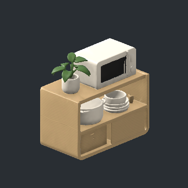
Kitchen_MicrowaveCabinet전자레인지와 받침장이 연결되어 Cooking 세트 유지
프리팹 파일Assets/Art/Items/Furniture/Library/Prefabs/Cooking/Kitchen_MicrowaveCabinet.prefab
Cooking / None / Floor
출처: C:/서현/3D 모델/가구/가구 모음_주방템.fbx
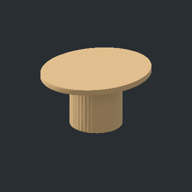
Kitchen_DiningTable상판 높이에서 장식을 절단하고 구멍을 메워 식탁만 보존
프리팹 파일Assets/Art/Items/Furniture/Library/Prefabs/Surface/Kitchen_DiningTable.prefab
Surface / None / Floor
출처: C:/서현/3D 모델/가구/가구 모음_주방템.fbx
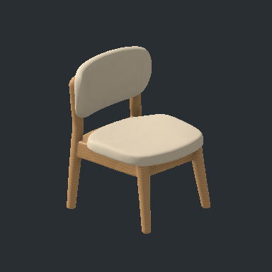
Kitchen_DiningChair개별 프리팹 · 바닥 중심 원점
프리팹 파일Assets/Art/Items/Furniture/Library/Prefabs/Seating/Kitchen_DiningChair.prefab
Seating / None / Floor
출처: C:/서현/3D 모델/가구/가구 모음_주방템.fbx
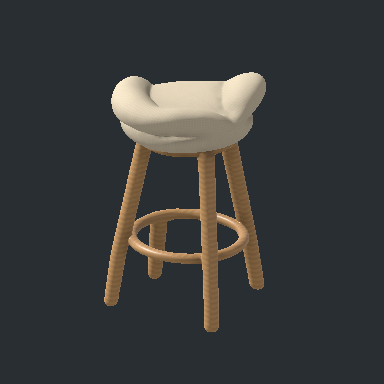
Kitchen_Stool개별 프리팹 · 바닥 중심 원점
프리팹 파일Assets/Art/Items/Furniture/Library/Prefabs/Seating/Kitchen_Stool.prefab
Seating / None / Floor
출처: C:/서현/3D 모델/가구/가구 모음_주방템.fbx
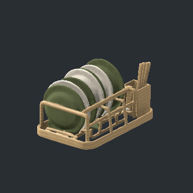
Kitchen_DishRack개별 프리팹 · 바닥 중심 원점
프리팹 파일Assets/Art/Items/Furniture/Library/Prefabs/Decoration/Kitchen_DishRack.prefab
Decoration / None / Surface
출처: C:/서현/3D 모델/가구/가구 모음_주방템.fbx
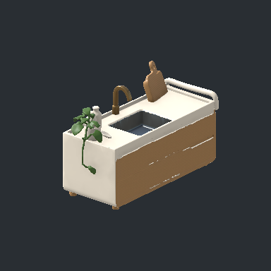
Kitchen_Sink개별 프리팹 · 바닥 중심 원점
프리팹 파일Assets/Art/Items/Furniture/Library/Prefabs/WaterSource/Kitchen_Sink.prefab
WaterSource / None / Floor
출처: C:/서현/3D 모델/가구/가구 모음_주방템.fbx
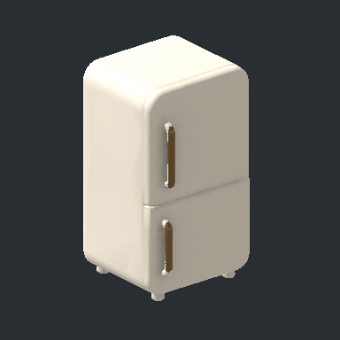
Kitchen_Fridge개별 프리팹 · 바닥 중심 원점
프리팹 파일Assets/Art/Items/Furniture/Library/Prefabs/Storage/Food/Kitchen_Fridge.prefab
Storage / Food / Floor
출처: C:/서현/3D 모델/가구/가구 모음_주방템.fbx
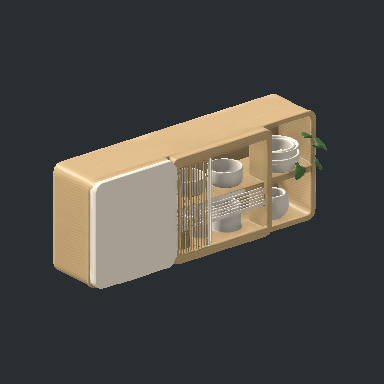
Kitchen_WallCabinet개별 프리팹 · 바닥 중심 원점
프리팹 파일Assets/Art/Items/Furniture/Library/Prefabs/Decoration/Kitchen_WallCabinet.prefab
Decoration / None / Wall
출처: C:/서현/3D 모델/가구/가구 모음_주방템.fbx
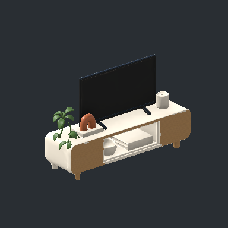
LivingRoom_TVSetTV장 및 연결된 장식 유지
프리팹 파일Assets/Art/Items/Furniture/Library/Prefabs/Display/LivingRoom_TVSet.prefab
Display / None / Floor
출처: C:/서현/3D 모델/가구/가구 모음_거실템.fbx
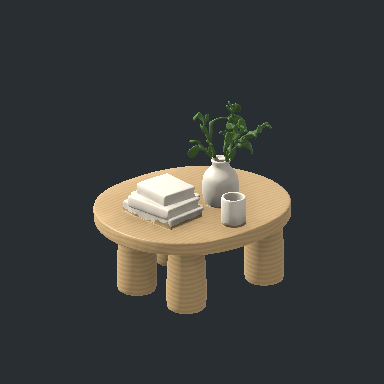
LivingRoom_CoffeeTableDecorated장식과 상판이 하나의 연결 메시: 요청대로 Decoration
프리팹 파일Assets/Art/Items/Furniture/Library/Prefabs/Decoration/LivingRoom_CoffeeTableDecorated.prefab
Decoration / None / Floor
출처: C:/서현/3D 모델/가구/가구 모음_거실템.fbx
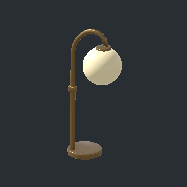
LivingRoom_FloorLamp개별 프리팹 · 바닥 중심 원점
프리팹 파일Assets/Art/Items/Furniture/Library/Prefabs/Lighting/LivingRoom_FloorLamp.prefab
Lighting / None / Floor
출처: C:/서현/3D 모델/가구/가구 모음_거실템.fbx
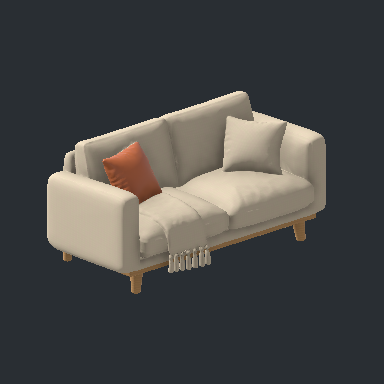
LivingRoom_Sofa개별 프리팹 · 바닥 중심 원점
프리팹 파일Assets/Art/Items/Furniture/Library/Prefabs/Seating/LivingRoom_Sofa.prefab
Seating / None / Floor
출처: C:/서현/3D 모델/가구/가구 모음_거실템.fbx
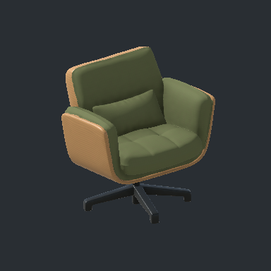
LivingRoom_SwivelChair개별 프리팹 · 바닥 중심 원점
프리팹 파일Assets/Art/Items/Furniture/Library/Prefabs/Seating/LivingRoom_SwivelChair.prefab
Seating / None / Floor
출처: C:/서현/3D 모델/가구/가구 모음_거실템.fbx
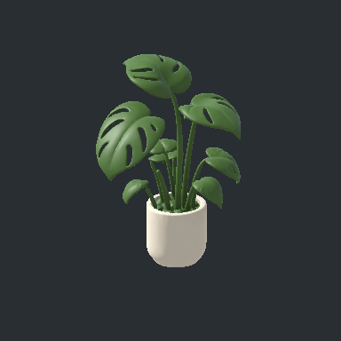
LivingRoom_Plant개별 프리팹 · 바닥 중심 원점
프리팹 파일Assets/Art/Items/Furniture/Library/Prefabs/Decoration/LivingRoom_Plant.prefab
Decoration / None / Floor
출처: C:/서현/3D 모델/가구/가구 모음_거실템.fbx
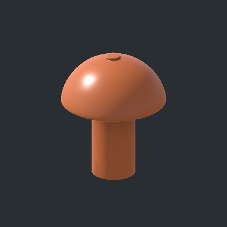
LivingRoom_TableLamp개별 프리팹 · 바닥 중심 원점
프리팹 파일Assets/Art/Items/Furniture/Library/Prefabs/Lighting/LivingRoom_TableLamp.prefab
Lighting / None / Surface
출처: C:/서현/3D 모델/가구/가구 모음_거실템.fbx
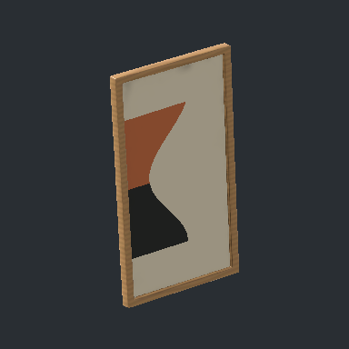
LivingRoom_FrameA개별 프리팹 · 바닥 중심 원점
프리팹 파일Assets/Art/Items/Furniture/Library/Prefabs/Decoration/LivingRoom_FrameA.prefab
Decoration / None / Wall
출처: C:/서현/3D 모델/가구/가구 모음_거실템.fbx
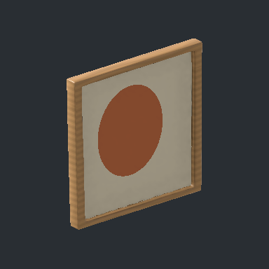
LivingRoom_FrameB개별 프리팹 · 바닥 중심 원점
프리팹 파일Assets/Art/Items/Furniture/Library/Prefabs/Decoration/LivingRoom_FrameB.prefab
Decoration / None / Wall
출처: C:/서현/3D 모델/가구/가구 모음_거실템.fbx
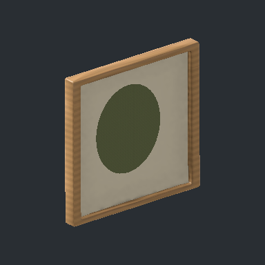
LivingRoom_FrameC개별 프리팹 · 바닥 중심 원점
프리팹 파일Assets/Art/Items/Furniture/Library/Prefabs/Decoration/LivingRoom_FrameC.prefab
Decoration / None / Wall
출처: C:/서현/3D 모델/가구/가구 모음_거실템.fbx
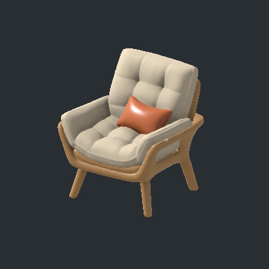
LivingRoom_Armchair개별 프리팹 · 바닥 중심 원점
프리팹 파일Assets/Art/Items/Furniture/Library/Prefabs/Seating/LivingRoom_Armchair.prefab
Seating / None / Floor
출처: C:/서현/3D 모델/가구/가구 모음_거실템.fbx
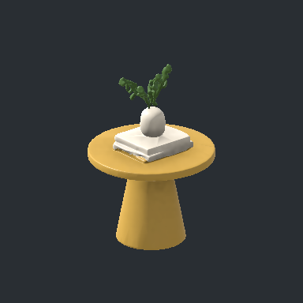
LivingRoom_SideTableDecorated장식과 상판이 하나의 연결 메시: 요청대로 Decoration
프리팹 파일Assets/Art/Items/Furniture/Library/Prefabs/Decoration/LivingRoom_SideTableDecorated.prefab
Decoration / None / Floor
출처: C:/서현/3D 모델/가구/가구 모음_거실템.fbx
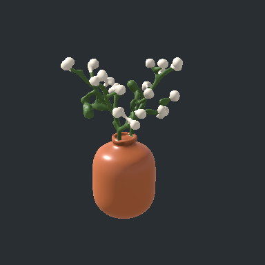
Essentials_FlowerVase개별 프리팹 · 바닥 중심 원점
프리팹 파일Assets/Art/Items/Furniture/Library/Prefabs/Decoration/Essentials_FlowerVase.prefab
Decoration / None / Surface
출처: C:/서현/3D 모델/가구/가구 모음_필수가구템.fbx
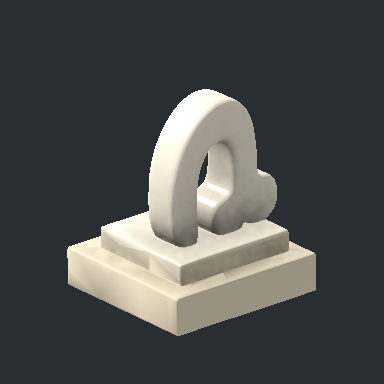
Essentials_Sculpture개별 프리팹 · 바닥 중심 원점
프리팹 파일Assets/Art/Items/Furniture/Library/Prefabs/Decoration/Essentials_Sculpture.prefab
Decoration / None / Surface
출처: C:/서현/3D 모델/가구/가구 모음_필수가구템.fbx
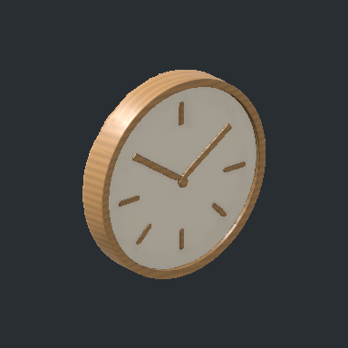
Essentials_WallClock개별 프리팹 · 바닥 중심 원점
프리팹 파일Assets/Art/Items/Furniture/Library/Prefabs/Decoration/Essentials_WallClock.prefab
Decoration / None / Wall
출처: C:/서현/3D 모델/가구/가구 모음_필수가구템.fbx
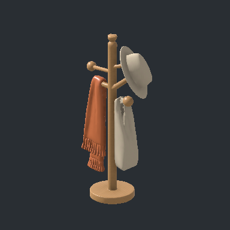
Essentials_CoatRack개별 프리팹 · 바닥 중심 원점
프리팹 파일Assets/Art/Items/Furniture/Library/Prefabs/Storage/Clothing/Essentials_CoatRack.prefab
Storage / Clothing / Floor
출처: C:/서현/3D 모델/가구/가구 모음_필수가구템.fbx
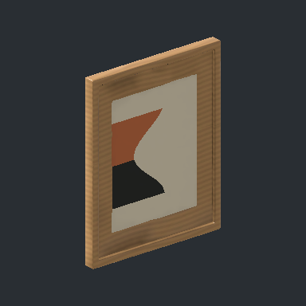
Essentials_FrameA개별 프리팹 · 바닥 중심 원점
프리팹 파일Assets/Art/Items/Furniture/Library/Prefabs/Decoration/Essentials_FrameA.prefab
Decoration / None / Wall
출처: C:/서현/3D 모델/가구/가구 모음_필수가구템.fbx
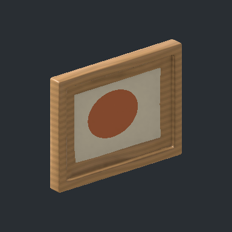
Essentials_FrameB개별 프리팹 · 바닥 중심 원점
프리팹 파일Assets/Art/Items/Furniture/Library/Prefabs/Decoration/Essentials_FrameB.prefab
Decoration / None / Wall
출처: C:/서현/3D 모델/가구/가구 모음_필수가구템.fbx
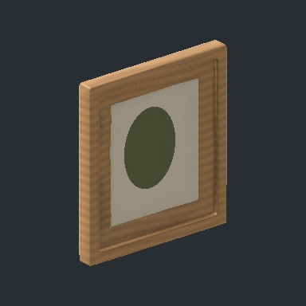
Essentials_FrameC개별 프리팹 · 바닥 중심 원점
프리팹 파일Assets/Art/Items/Furniture/Library/Prefabs/Decoration/Essentials_FrameC.prefab
Decoration / None / Wall
출처: C:/서현/3D 모델/가구/가구 모음_필수가구템.fbx
Essentials_ShoeCabinet개별 프리팹 · 바닥 중심 원점
프리팹 파일Assets/Art/Items/Furniture/Library/Prefabs/Storage/Clothing/Essentials_ShoeCabinet.prefab
Storage / Clothing / Floor
출처: C:/서현/3D 모델/가구/가구 모음_필수가구템.fbx
Essentials_Cushion개별 프리팹 · 바닥 중심 원점
프리팹 파일Assets/Art/Items/Furniture/Library/Prefabs/Decoration/Essentials_Cushion.prefab
Decoration / None / Floor
출처: C:/서현/3D 모델/가구/가구 모음_필수가구템.fbx
Essentials_Washer개별 프리팹 · 바닥 중심 원점
프리팹 파일Assets/Art/Items/Furniture/Library/Prefabs/Decoration/Essentials_Washer.prefab
Decoration / None / Floor
출처: C:/서현/3D 모델/가구/가구 모음_필수가구템.fbx
Essentials_FabricBox개별 프리팹 · 바닥 중심 원점
프리팹 파일Assets/Art/Items/Furniture/Library/Prefabs/Storage/General/Essentials_FabricBox.prefab
Storage / General / Floor
출처: C:/서현/3D 모델/가구/가구 모음_필수가구템.fbx
Essentials_WoodBox개별 프리팹 · 바닥 중심 원점
프리팹 파일Assets/Art/Items/Furniture/Library/Prefabs/Storage/General/Essentials_WoodBox.prefab
Storage / General / Floor
출처: C:/서현/3D 모델/가구/가구 모음_필수가구템.fbx
Essentials_SquareBasket개별 프리팹 · 바닥 중심 원점
프리팹 파일Assets/Art/Items/Furniture/Library/Prefabs/Storage/General/Essentials_SquareBasket.prefab
Storage / General / Floor
출처: C:/서현/3D 모델/가구/가구 모음_필수가구템.fbx
Essentials_RoundBasket개별 프리팹 · 바닥 중심 원점
프리팹 파일Assets/Art/Items/Furniture/Library/Prefabs/Storage/General/Essentials_RoundBasket.prefab
Storage / General / Floor
출처: C:/서현/3D 모델/가구/가구 모음_필수가구템.fbx
Essentials_PlantLarge개별 프리팹 · 바닥 중심 원점
프리팹 파일Assets/Art/Items/Furniture/Library/Prefabs/Decoration/Essentials_PlantLarge.prefab
Decoration / None / Floor
출처: C:/서현/3D 모델/가구/가구 모음_필수가구템.fbx
Essentials_PlantTrailing개별 프리팹 · 바닥 중심 원점
프리팹 파일Assets/Art/Items/Furniture/Library/Prefabs/Decoration/Essentials_PlantTrailing.prefab
Decoration / None / Floor
출처: C:/서현/3D 모델/가구/가구 모음_필수가구템.fbx
Essentials_PlantSmall개별 프리팹 · 바닥 중심 원점
프리팹 파일Assets/Art/Items/Furniture/Library/Prefabs/Decoration/Essentials_PlantSmall.prefab
Decoration / None / Floor
출처: C:/서현/3D 모델/가구/가구 모음_필수가구템.fbx
Essentials_Curtain개별 프리팹 · 바닥 중심 원점
프리팹 파일Assets/Art/Items/Furniture/Library/Prefabs/Decoration/Essentials_Curtain.prefab
Decoration / None / Window
출처: C:/서현/3D 모델/가구/가구 모음_필수가구템.fbx
armchair원본에 색상 텍스처 없음
프리팹 파일Assets/Art/Items/Furniture/Library/Prefabs/Seating/armchair.prefab
Seating / None / Floor
출처: C:\서현\3D 모델\가구\armchair.fbx
bar_chair개별 프리팹 · 바닥 중심 원점
프리팹 파일Assets/Art/Items/Furniture/Library/Prefabs/Seating/bar_chair.prefab
Seating / None / Floor
출처: C:\서현\3D 모델\가구\bar chair.fbx
barrel원본에 색상 텍스처 없음
프리팹 파일Assets/Art/Items/Furniture/Library/Prefabs/Decoration/barrel.prefab
Decoration / None / Floor
출처: C:\서현\3D 모델\가구\barrel.fbx
barrel_shaded원본에 색상 텍스처 없음
프리팹 파일Assets/Art/Items/Furniture/Library/Prefabs/Decoration/barrel_shaded.prefab
Decoration / None / Floor
출처: C:\서현\3D 모델\가구\barrel_shaded.fbx
closet원본에 색상 텍스처 없음
프리팹 파일Assets/Art/Items/Furniture/Library/Prefabs/Storage/Clothing/closet.prefab
Storage / Clothing / Floor
출처: C:\서현\3D 모델\가구\closet.fbx
door1개별 프리팹 · 바닥 중심 원점
프리팹 파일Assets/Art/Items/Furniture/Library/Prefabs/Fixtures/Doors/door1.prefab
None / None / Floor
출처: C:\서현\3D 모델\가구\door1.fbx
door2개별 프리팹 · 바닥 중심 원점
프리팹 파일Assets/Art/Items/Furniture/Library/Prefabs/Fixtures/Doors/door2.prefab
None / None / Floor
출처: C:\서현\3D 모델\가구\door2.fbx
door3개별 프리팹 · 바닥 중심 원점
프리팹 파일Assets/Art/Items/Furniture/Library/Prefabs/Fixtures/Doors/door3.prefab
None / None / Floor
출처: C:\서현\3D 모델\가구\door3.fbx
sink개별 프리팹 · 바닥 중심 원점
프리팹 파일Assets/Art/Items/Furniture/Library/Prefabs/WaterSource/sink.prefab
WaterSource / None / Floor
출처: C:\서현\3D 모델\가구\sink.fbx
sofa_company원본에 색상 텍스처 없음
프리팹 파일Assets/Art/Items/Furniture/Library/Prefabs/Seating/sofa_company.prefab
Seating / None / Floor
출처: C:\서현\3D 모델\가구\sofa_company.fbx
toilet원본에 색상 텍스처 없음
프리팹 파일Assets/Art/Items/Furniture/Library/Prefabs/WaterSource/toilet.prefab
Seating, WaterSource / None / Floor
출처: C:\서현\3D 모델\가구\toilet.fbx
bakery_show개별 프리팹 · 바닥 중심 원점
프리팹 파일Assets/Art/Items/Furniture/Library/Prefabs/Storage/Food/bakery_show.prefab
Storage / Food / Floor
출처: C:\서현\3D 모델\가구\bakery_show\Meshy_AI_Bakery_Display_1006020720_texture.fbx
bakery_show2개별 프리팹 · 바닥 중심 원점
프리팹 파일Assets/Art/Items/Furniture/Library/Prefabs/Storage/Food/bakery_show2.prefab
Storage / Food / Floor
출처: C:\서현\3D 모델\가구\bakery_show2\Meshy_AI_Bakery_Shelf_Display__1006020851_texture.fbx
cafe_show개별 프리팹 · 바닥 중심 원점
프리팹 파일Assets/Art/Items/Furniture/Library/Prefabs/Storage/Food/cafe_show.prefab
Storage / Food / Floor
출처: C:\서현\3D 모델\가구\cafe_show\Meshy_AI_Bakery_and_Beverage_D_1006021046_texture.fbx
coffee_machine_cafe개별 프리팹 · 바닥 중심 원점
프리팹 파일Assets/Art/Items/Furniture/Library/Prefabs/Cooking/coffee_machine_cafe.prefab
Cooking / None / Floor
출처: C:\서현\3D 모델\가구\coffee_machine_cafe\Meshy_AI_professional_espresso_1005123059_texture.fbx
salon_shampoo_chair개별 프리팹 · 바닥 중심 원점
프리팹 파일Assets/Art/Items/Furniture/Library/Prefabs/Seating/salon_shampoo_chair.prefab
Seating / None / Floor
출처: C:\서현\3D 모델\가구\salon_shampoo_chair\Meshy_AI_Modern_Salon_Shampoo__1006002252_texture.fbx
salon_shampoo_chair2개별 프리팹 · 바닥 중심 원점
프리팹 파일Assets/Art/Items/Furniture/Library/Prefabs/Seating/salon_shampoo_chair2.prefab
Seating / None / Floor
출처: C:\서현\3D 모델\가구\salon_shampoo_chair2\Meshy_AI_Black_Salon_Shampoo_C_1006020124_texture.fbx
standing_chalkboard_01개별 프리팹 · 바닥 중심 원점
프리팹 파일Assets/Art/Items/Furniture/Library/Prefabs/Decoration/standing_chalkboard_01.prefab
Decoration / None / Floor
출처: C:\Users\usercom\Downloads\standing_chalkboard_01_4k.blend\standing_chalkboard_01_4k.blend
Chandelier_02개별 프리팹 · 바닥 중심 원점
프리팹 파일Assets/Art/Items/Furniture/Library/Prefabs/Lighting/Chandelier_02.prefab
Lighting / None / Ceiling
출처: C:\Users\usercom\Downloads\Chandelier_02_4k.blend\Chandelier_02_4k.blend
outdoor_cafe_table개별 프리팹 · 바닥 중심 원점
프리팹 파일Assets/Art/Items/Furniture/Library/Prefabs/Surface/outdoor_cafe_table.prefab
Surface / None / Floor
출처: C:\Users\usercom\Downloads\outdoor_table_chair_set_01_4k.blend\outdoor_table_chair_set_01_4k.blend
outdoor_cafe_chair개별 프리팹 · 바닥 중심 원점
프리팹 파일Assets/Art/Items/Furniture/Library/Prefabs/Seating/outdoor_cafe_chair.prefab
Seating / None / Floor
출처: C:\Users\usercom\Downloads\outdoor_table_chair_set_01_4k.blend\outdoor_table_chair_set_01_4k.blend
wooden_picnic_table개별 프리팹 · 바닥 중심 원점
프리팹 파일Assets/Art/Items/Furniture/Library/Prefabs/Surface/wooden_picnic_table.prefab
Surface / None / Floor
출처: C:\Users\usercom\Downloads\wooden_picnic_table_4k.blend\wooden_picnic_table_4k.blend
plastic_monobloc_chair_01개별 프리팹 · 바닥 중심 원점
프리팹 파일Assets/Art/Items/Furniture/Library/Prefabs/Seating/plastic_monobloc_chair_01.prefab
Seating / None / Floor
출처: C:\Users\usercom\Downloads\plastic_monobloc_chair_01_4k.blend\plastic_monobloc_chair_01_4k.blend
steel_frame_shelves_01개별 프리팹 · 바닥 중심 원점
프리팹 파일Assets/Art/Items/Furniture/Library/Prefabs/Storage/General/steel_frame_shelves_01.prefab
Storage / General / Floor
출처: C:\Users\usercom\Downloads\steel_frame_shelves_01_4k.blend\steel_frame_shelves_01_4k.blend
wheelchair원본에 색상 텍스처 없음
프리팹 파일Assets/Art/Items/Furniture/Library/Prefabs/Seating/wheelchair.prefab
Seating / None / Floor
출처: C:\서현\3D 모델\기타\wheelchair.fbx
delivery_box개별 프리팹 · 바닥 중심 원점
프리팹 파일Assets/Art/Items/Furniture/Library/Prefabs/Storage/General/delivery_box.prefab
Storage / General / Floor
출처: C:\서현\3D 모델\기타\delivery box\base_basic_pbr.fbx